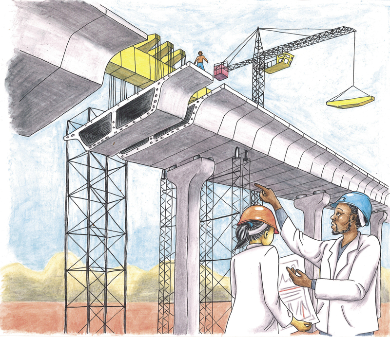
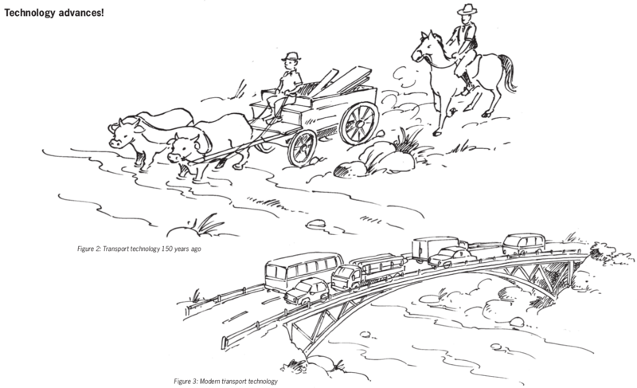
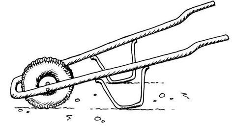
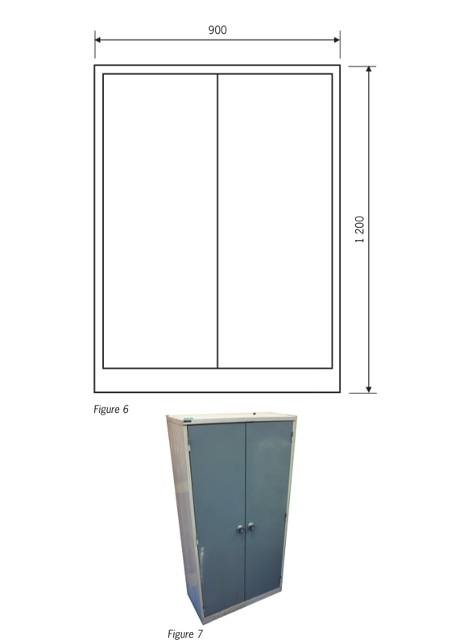
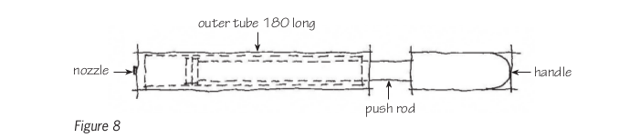
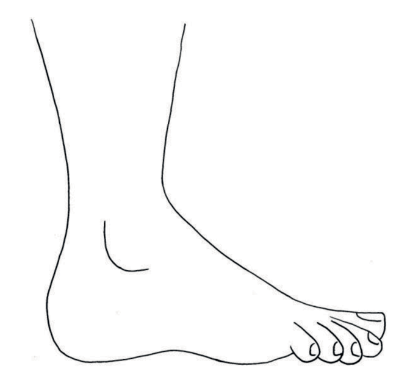
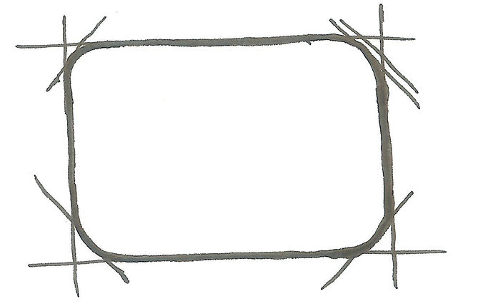

What is technology
In this chapter, you will learn what Technology is about. You will learn about natural and man-made materials, about tools, and about the design process.


Materials, tools and plans
Figures 4 to 7 show different techniques to build houses, the tools we use to build them and other kinds of activities that fall under the term Technology. Look at the pictures carefully and try to understand what happens in each picture. When you answer the questions on page 7, you should already have some idea what technology is about.
The person shown above is using grass to cover his roof. Grass is a natural material. It grows in the veld. Some types of grass are much better for roofs than other types. It is not easy to make a thatched roof. Only a few people have the skills to do it properly.
The people in the picture above are using corrugated roof sheets to cover their roof. Metal roof sheets don't occur in nature like grass. People make roof sheets from two metals named iron and zinc. The iron and zinc is obtained by heating crushed rock to separate the metal from other substances. Roof sheeting is a man-made material.
Natural materials are changed in different ways to make man-made materials.
Figure 8: House A
Figure 9: House B
Figure 10: House C
Figure 11: House D
Homework
-
What material is being used to build the house in Figure 8?
-
Is this a man-made material or a natural material?
-
What tools are used by the people building the house in Figure 8?
-
-
What material is being used to build the house in Figure 9?
-
Is this a man-made material or a natural material?
-
What tools are being used by the people building the house in Figure 9?
-
-
What material is being used to build the house in Figure 10?
-
Is this a man-made material or a natural material?
-
What tools are being used by the people building the house in Figure 10?
-
-
What material is being used to build the house in Figure 11?
-
Is this a man-made material or a natural material?
-
What tools are being used by the people building the house in Figure 11?
-

Two girls, Sarah and Tebogo, walk in the veld and climb up a small hill. Suddenly, a rock comes loose and starts rolling down the hill. It lands on Sarah's foot, which gets caught underneath the rock. Tebogo tries to lift the rock, but it is too heavy for her. She looks around and finds an iron pole. She tries to lift the rock with the iron pole and it works! Sarah now manages to pull her foot out from underneath the rock.
Tebogo was not strong enough to lift the rock, she used a tool. Tools help us to do things that we cannot do with our bodies alone. There are other examples of tools, like the ones below.
- Spoons, knives and forks are used to eat with.
- We use scissors to cut cloth or paper. This works much better than tearing cloth or paper with our hands.
- We use cellphones to talk to people that are far away from us. Cellphones are tools for communication. Two hundred years ago, there were no cellphones or landline phones. At that time, people could only talk to each other when they were close enough to hear each other without using any tools.
- Doctors and nurses use a variety of tools to treat people who are sick.
Some tools are easy to use, like knives, forks and spoons.
Some tools are a bit more difficult to use, like scissors and screwdrivers.
Some tools are even more difficult to use, like a powerdrill. A person who wants to use tools like that must be trained.
About 50 years ago, when your grandparents were children, nobody had cellphones. There were no television sets in South Africa. Also, most roads in South Africa were gravel roads. Tarred roads were only found in and around big cities. Most schools didn't have electricity either.
Two hundred years ago, the world was very different. Electricity had not yet been invented. People travelled on foot, on animals or in carts and wagons drawn by animals. Ships were powered by people who rowed, or by sails which harnessed wind energy.
One thing many people do is develop practical solutions to problems so that people can have the things they want and need. To do this, people use their knowledge and skills. They also use tools and materials. When developing solutions to problems, people should try not to damage the environment, and they should keep the needs and safety of individuals, families and communities in mind. All of this together is called Technology.
All people use tools, man-made materials and machines of some kind. Nowadays, people do much less with their bare hands and make much less use of natural materials than in the past.
People who are trained to work with special tools are called technologists.
Technologists find jobs much more easily than people with no training in Technology.
Something to think about
In a certain small town, people get their water from a dam about 3 km away. Then something very unfortunate happened. The dam wall broke during a flood, and it will take at least two years to build a new dam wall. Fortunately, there is an old well near the town, with enough water for all the people. But the well is very deep and at the moment there is no way to get water to the surface. The town is also in a rural area with no electricity.
What do you think can be done to get the water out of the well? Are you sure your plan will work? Can you make a drawing so that other people will understand your plan?
Sibu communicated the plan to his father.
- investigate,
- design or, in other words, make plans,
- evaluate their designs, and often change them,
- make the things they have designed,
- evaluate the things they have made, and
- communicate their designs to other people.
This is sometimes called the design process. You will often work like this during the year.

Design a wheelbarrow
Be part of a story
In this lesson, you will play an important part in a story. The story is about three people:
- Mrs April, who grows vegetables and then sells it at a street market,
- you, and
- Mr Sethole, a carpenter. He works mainly with wood, but can also work with metal sheets.
Mrs April needs a wheelbarrow to take her vegetables to the street market. She doesn't like the wheelbarrows in the shops. She asks you to go to Mr Sethole and ask him to make a wheelbarrow for her. You take the message to Mr Sethole and he says to you:
"You will have to give me more information so that I can know how to make the wheelbarrow. Wheelbarrows are used for different purposes and they can be of different sizes and shapes. Please ask Mrs April some questions and then come back to me with more information."
Almost any technology project starts with the gathering of information. Without good information, it is not clear what has to be done. This part of the design process is called investigation.
A wheelbarrow that Mrs April can buy in the shop looks like the one on the right. She says this wheelbarrow will not work well for her vegetables.
-
Write down some questions that you can ask Mrs April.
-
Try to think what answers Mrs April might give to your questions. Then write a short note below explaining what she wants to do with the wheelbarrow, and what the wheelbarrow should look like.
The description of what the wheelbarrow should look like is part of the specifications for the wheelbarrow.
The notes that you are writing here is sometimes called a design brief.
-
Mrs April wants to put vegetables next to each other, rather than on top of each other. How should her wheelbarrow differ from the wheelbarrow you can buy in a shop?
You are designing a wheelbarrow for Mrs April, not for somebody else. So you should consider what she will use it for.
Mrs April has an old wheelbarrow without a top. Mr Sethole says he can make a new top and fix it to the old wheelbarrow.
Figure 14
-
Make a sketch below to show what you think the new top should look like.

-
Which materials can be used to make the wheelbarrow's top? Describe the options and say which one you prefer. Also explain why you prefer this material.
You are still busy designing a wheelbarrow for Mrs April. At this stage, you should think about possible materials so that you can select suitable materials for making the wheelbarrow.

Next week
During the next two weeks, you will learn to make different types of drawings. Drawings will help you to think about things you may make, and to share your ideas with other people.
How to say things with drawings
Sketching and drawing are very important skills in Technology. They allow us to share our ideas, designs, and technical solutions with other people. In this chapter, you will learn what the main purpose of graphics are. You will also learn about the different meanings of thick and dark lines, thin and feint lines, and dashed lines. And you will learn a little bit about scale and how to show sizes on drawings. But the most important thing about sketching and drawing is that you need to practise. So in this chapter you will learn how to do some simple sketches and how to do a flat drawing showing sizes.


How many doors should it have?
When you answer these questions, you are writing design specifications for the cupboard. Whenever you plan to make something, it is useful to first think about what you want to make, and to write your ideas down. You can then give your design specifications to someone else to read. That person will maybe make some useful suggestions that will improve your design. Without written design specifications, it is very difficult to get good suggestions from other people.
How many shelves should it have?
What should it be made of?
How high and how wide should it be?
How deep should it be?
Make a rough sketch in the space below to show what you think the cupboard will look like.
Make a bigger and better sketch of the cupboard. Write notes next to your drawing to show where the doors and shelves are. Also write notes to say how big different parts of the cupboard should be, in millimetres (mm).
The lengths of different parts of an object are called the dimensions. Things like the height, width and depth of the cupboard, as well as the distance between the shelves, are called the dimensions.
Should the real cupboard be three times bigger than your drawing?
A real object is often several times bigger than a drawing of it. If the object is five times as big as the drawing, we say the scale of the drawing is"1 to 5". This is written as "1:5".
How many times bigger should the real cupboard be than your drawing?

Use dashed lines to show the bodies of the two people in the car below.
Draw dashed lines on the drawing of a cupboard on the next page to show four shelves inside.
Just like you use a language such as English to communicate with others, sketches and drawings are a "language". And just like English, drawings have rules to help us understand them better. These rules are known as "drawing conventions".
dimensions, are shown with a thin dimension line with arrows at both ends. They are drawn a little bit away from objects.extension lines, which do not touch objects, show you what is being measured.- Use thin feint lines for guidelines, such as the lines for a guide box.
- Use thick lines to show the outside edges of an object, such as the edges you can see from the front.
- Use a solid line to show these edges.
You have also learnt that dimensions are shown by writing the length of an object above a dimension line.
A dimension line has small arrows at each end. These arrows touch small extension lines that show where the length starts and where it ends. Dashed lines show hidden details of drawings.
Name the parts of the pump shown in this sketch.
How long is the outer tube of this bicycle pump?
Sketching and drawing are important ways of recording and communicating ideas.
For designers and technologists, sketching is like taking notes. It reminds them of their ideas and helps them to share these ideas with others. Sketching is usually done without any instruments. All you need is a pencil and some paper.
How long is the push rod? How do you know that?
Look at the drawing of a different bicycle pump below. This drawing is accurate, so we call it a scale drawing. It is four times smaller than a real pump. We say it is drawn to a scale of 1:4. That means that if you measure the length of the outer tube of this drawing, it will be four times smaller than the outer tube of the real pump.
Why is the outer tube of this pump drawn with solid lines?
What other part of this pump is drawn with solid lines?
Why is part of the push rod drawn with dashed lines and other parts with solid lines?
What type of line shows how long the outer tube is?
How long will the outer tube of the real pump be?
Use the scale on the drawing to find out how long the handle will be on the real pump.
Now draw a dimension line on the pump drawing to show how long the handle will be.
Name three different types of lines that you can see on the drawing.
What is the scale of the working drawing of the cupboard three pages back? You will have to take measurements to find out what the scale is.


Use thin, feint lines for the guidelines, which are called construction lines.
Use thicker, dark lines for the outlines of sketches.
Sketch a rectangle with rounded corners.
- Your drawing should be about two times as big as the drawing on the right. It is drawn to a scale of 3:1.
- Sketch a guide box. Do not use a ruler. Use light guidelines.
- Mark the corners with feint lines.
- Make the corners round.
- Now make the outline thicker.
Sketch a triangle with rounded corners.
Sketch a circle.
A drawing of a bicycle pump is shown on the page. Make an accurate 1:4 scale drawing of the pump on the grid paper below.
 scale down means to make a
drawing smaller than the actual object.scale up means to make a drawing
bigger than the actual object.
scale down means to make a
drawing smaller than the actual object.scale up means to make a drawing
bigger than the actual object.-
The drawing at the bottom of the page shows the front view of a house. Make a bigger drawing of the front view of this house.
Note the following:
- The 6 m length of the real house should be 60 mm on your drawing.
- Show the height of the side wall using a dimension line on your drawing.
- Show the height to the top of the chimney.
Next week
Next week, you will learn how to make drawings that show more than one side of an object.